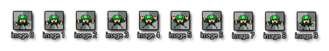

Sprites are generally the visual representations of objects within the game you are creating. As such, a sprite is either a single image, drawn with any drawing program you like,
or a set of images that, when played one after another, looks like a looping animation. For example, the following 10 images form a sprite for a character who is waving his arms
while skydiving.

And the actual finished animation would look like this when placed in a game :

That looks pretty good, eh? Most games need you to make sprites like this for all the things in your game world, from enemies to powerups, from walls to menus, and when you start to make a game you normally collect or
create a set of nice sprites for the objects you are going to use. A considerable number of useful sprites are bundled with GameMaker:Studio to help you get started and other collections of useful sprites
can be found on the YoYoGames website which can all be used as "place holders" until you have enough confidence to make your own or get together with an artist, but please note that the bundled sprites
are not for distribution in any finished works that you make. You can also find many more sprites on the web, normally in the form of png strips or animated gifs.
To create a sprite, choose the item Create Sprite from the Resources menu, or use the corresponding button on the toolbar. Either will cause the following window to open :
As you can probably see, the top left of the window has a field for the "Name" of the sprite. All sprites (and all other resources) must have a name given to them so that you (and GameMaker:Studio!) can
identify them easily, although you should note that the actual name itself is really just a variable which holds a number that "points" to the resource, in this case a sprite. It's best to give each sprite a descriptive name
so that you can identify at a glance whether a particular resource is a sprite or an object or anything else, and many people do this by prefixing or suffixing the resource with the letters "spr". For example, the above sky
diver sprite could be called spr_SkyDiver or SkyDiver_spr. Even though this is not strictly required, you are strongly advised to use only letters and digits and the underscore symbol (_) in a name of
a sprite (and any other resource) and to let it start with a letter, not a number as this will become very important once you start using code.
NOTE : If you are using the Free version of GameMaker:Studio you are limited to a maximum of 20 sprites per game. For more details see
here.
To load a sprite, click on the button Load Sprite. A special file dialog window opens in which you can choose the sprite you want to import into GameMaker:Studio :
The left part is a fairly standard file selector in which you can navigate around your computer and select the sprite that you want to import. On the right you have a preview of the sprite image you select and some basic
information about its size. Here you can also indicate a couple of things that you'd like GameMaker:Studio to do when you import the sprite, like make opaque (remove any transparent parts), remove the
background color (if it has one) making it transparent, or whether to smooth the edges of the sprite (only if it is transparent), which can greatly improve its appearance. When you have found the sprite you need and
selected the transparency options you like, press Open to load the sprite into GameMaker:Studio.
GameMaker:Studio can load many different formats of graphics file, including jpeg, bmp, png and gif. There are a couple of things that should be noted when loading different files :
- When you load an animated gif, the different images of the animation automatically form the sprite subimages.
- When the file name ends with _stripXX, where XX a number, it is considered to contain a strip of XX subimages next to each other, and GameMaker:Studio will import it as such. For example, an image file with name ball_strip4.png is assumed to contain 4 subimages and will be split up as such when loaded.
- If you have a sprite strip image that you wish to load into GameMaker:Studio which does not have the above-mentioned format, this must be done from the Sprite Editor File Menu.
- Although jpeg images are supported, it is best to avoid using this file type as, due to the compression used, the images are generally of poorer quality than either png or bmp.
Once the sprite is loaded you are returned to the sprite properties window where the first subimage is shown on the right of the screen. When there are multiple subimages, you can cycle through them using the arrow buttons
that appear beside the partof the window labelled "Show", and, should you make any changes to the sprite, you can then save it again using the "Save" button.
For a more in depth look at the sprite editor in GameMaker:Studio you can go to the Advanced Section of this manual.